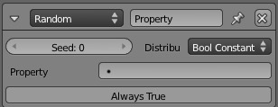

Актуатор «Випадково» -- Random Actuator¶
Актуатор Random створює випадкове значення, яке може бути збережене у властивості об'єкта.

{kind=link}
Актуатор «Випадково» -- Random.
Властивості -- Properties¶
- Базис -- Seed
- Стартовий базис для генератора випадковості.
Розподіл -- Distribution¶
Розподіли, з яких обирається випадкове значення. Стандартним розподілом є «Булів Постійно» -- Boolean Constant дає логічні або істину -- True або хибу -- False, які корисні для тестових цілей.
Кожен розподіл має одну загальну властивість, що зветься: Property. Вона може мати дійсночислове -- float, цілочислове -- integer або булеве (логічне) -- boolean значення залежно від типу розподілу.
- Float Neg. Exp. -- Дійсночислове Від'ємна Експонента
Значення зменшуються експоненційно з вказаним часом напіврозпаду -- Half-Life Time.
- Час Напіврозпаду -- Half-Life Time
- Час, період напіврозпаду.
- Float normal -- Дійсночислове Нормально
Випадкові числа з нормального розподілу.
- Середнє -- Mean
- Середнє нормального розподілу.
- SD -- Стандартне Відхилення
- Стандартне відхилення нормального розподілу.
- Float uniform -- Дійсночислове Однорідно
- Випадкові значення вибираються однорідно між значеннями мінімуму (Min) та максимуму (Max).
- Float constant -- Дійсночислове Постійно
- Повертає постійне, стале значення, вказане у полі Value.
- Int Poisson -- Цілочислове Пуасон
- Випадкові числа з розподілу Пуасона -- Poisson distribution. Середнє з рівняння визначається значенням Mean.
- Int uniform -- Цілочислове Однорідно
- Випадкові значення вибираються однорідно між значеннями мінімуму (Min) та максимуму (Max).
- Int constant -- Цілочислове Постійно
- Повертає постійне, стале значення, вказане у полі Value.
- Bool Bernoulli -- Булів Бернуллі
- Повертає випадковий розподіл, використовуючи розподіл Бернуллі -- Bernoulli distribution з вказаною пропорцією пульсів
TRUE. Ця пропорція розраховується за значенням Chance. - Bool uniform -- Булів Однорідно
- Шанс 50/50 отримання True/False.
- Bool constant -- Булів Постійно
- Повертає постійне значення, визначене полем Value, повинно бути або
True, абоFalse.